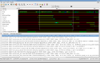

ELC: Using LTTng
Several tracing presentations were in evidence at this year's Embedded
Linux Conference, including Mathieu Desnoyers's "hands-on
tutorial
" on the Linux Trace
Toolkit next generation (LTTng). Desnoyers showed how to use LTTng to
solve real-world performance and latency problems, while giving a good
overview of the process of Linux kernel problem solving. The target was
embedded developers, but the presentation was useful for anyone interested
in finding and fixing problems in Linux itself, or applications running
atop it.
Desnoyers has been hacking on the kernel for many years, and was recently awarded his Ph.D. in computer engineering based largely on his work with LTTng. Since then, he has started his own company, EfficiOS to do consulting work on LTTng as well as helping various customers diagnose their performance problems. In addition to LTTng itself, he also developed the Userspace RCU library that allows user-space applications to use the Read-Copy-Update (RCU) data synchronization technique that is used by the kernel.
LTTng consists of three separate components: patches to the Linux kernel to add tracepoints along with the LTTng infrastructure and ring buffer, the LTT control user-space application, and the LTTV GUI interface for viewing trace output. Each is available on the LTTng web site and there are versions for kernels going back to 2.6.12. There is extensive documentation as well.
Lockless trace clock
The lockless trace clock is "one major piece of LTTng that is
architecture dependent
". This clock is a high-precision timestamp
derived from the processor's cycle counter that is placed on each trace
event. The timestamp is coordinated between separate
processors allowing system-wide correlation of events.
On processors with frequency scaling and non-synchronized cycle counters, like
some x86 systems, the trace clock can get confused when the processor
operating frequency changes, so that feature needs to
be disabled before tracing. Desnoyers noted that Nokia had funded work for LTTng to
properly handle frequency scaling and power management
features of the ARM OMAP3 processor, but that it hasn't yet been done for x86.
Tracing strategy
A portion of the talk was about the tradeoffs of various tracing
strategies. Desnoyers described the factors that need to be considered
when deciding on how to trace a problem including what kind of bug it is,
how reproducible it is, how much tracing overhead the system can tolerate,
the availability of the system to reproduce it on,
whether it occurs only on production systems, and so on. Each of these
things "impact the number of tracing iterations available
".
It may be that because it occurs infrequently or is on a third-party
production system, one can only get a single tracing run, "or you may
have the luxury of multiple trace runs
".
Based on those factors, there are different kinds of tracing to choose from in LTTng. At the top level, you can use producer-consumer tracing, where all of the enabled events are recorded to a filesystem, "flight recorder" mode, where the events are stored in fixed-size memory buffers and newer events overwrite the old, or both of these modes can be active at once. There are advantages and disadvantages to each, of course, starting with higher overhead for producer-consumer traces. But the amount of data which can be stored for those types of traces is generally much higher than for flight recorder traces.
Because there is generally an enormous amount of data in a trace, Desnoyers described several techniques to help hone in on the problem area. In LTTng, events are grouped by subsystem into "channels" and each channel can have a different buffer size for flight recorder mode. That allows more backlog for certain kinds of events, while limiting others. In addition, instrumentation (trace events, kernel markers) can be disabled to reduce the amount of trace data that is generated.
Another technique is to use "anchors", specific events in the trace that are the starting point for analysis. The anchor is often used by going backward in the trace from that point. The anchors can either come from instrumentation like the LTTng user-space tracer or kernel trace events, or they can be generated by the analysis itself. The longest timer interrupt jitter (i.e. how far from the nominal time where it should happen) is an example he gave of one kind of analysis-generated anchor.
A related idea is "triggers", which are a kind of instrumentation with a side-effect. By using ltt_trace_stop("name"), a trigger can stop the tracing when a particular condition occurs in the kernel. Using lttctl from user space is another way to stop a trace. Triggers are particularly helpful for flight recorder traces, he said.
Live demo
Desnoyers also did a demonstration of LTTng on two separate kinds of problems both involving the scheduler. One was to try to identify sources of audio latency by running a program with a periodic timer that expired every 10ms. The code was written to put an anchor into the trace data every time the timer missed by more than 5ms. He ran the program, then moved a window around on the screen, which caused delays to the timer of up to 60ms.

Using that data, he brought up the LTTV GUI to look at what was going on. It
was a bit hard to follow exactly what he was doing, but eventually he
narrowed it down to the scheduling of the X.org server. He then
instrumented the kernel scheduler with a kernel marker to get more
information on how it was making its decisions. Kernel markers were
proposed for upstream inclusion a ways back, but were roundly criticized
for cluttering up the kernel with things that looked like a debug
printk(). Markers are good for ad hoc tracepoints, but
"don't try to push it upstream
", he warned.
The other demo was to look at a buffer underrun in ALSA's aplay utility. The same scheduler marker was used to investigate that problem as well.
The status of LTTng
Perhaps the hardest question was saved to the end of the presentation: what is the status of LTTng getting into the mainline? Desnoyers seemed upbeat about the prospects of that happening, partly because there has been so much progress made in the kernel tracing area. Most of the instrumentation side has already gone in, and the tracer itself is ongoing work that he now has time do. He presented a "status of LTTng" presentation at the Linux Foundation Collaboration Summit (LFCS), which was held just after ELC, and there was agreement among some of the tracing developers to work together on getting more of LTTng into the kernel.
Desnoyers does not see a problem with having multiple tracers in the
kernel, so long as they use common infrastructure and target different
audiences. Ftrace is "more oriented toward kernel
developers
", he said, and it has different tracers for specific
purposes. LTTng on the other hand is geared toward users and user-space
programmers who need a look into the kernel to diagnose their problems.
With Ftrace developer Steven Rostedt participating in both the ELC and LFCS
talks—and agreeing with many of Desnoyers's ideas—the prospects
look good for at least parts of LTTng to make their way into the mainline
over the next year.
| Index entries for this article | |
|---|---|
| Kernel | Development tools/Kernel tracing |
| Kernel | Tracing |
| Conference | Embedded Linux Conference/2010 |
Posted Apr 23, 2010 19:56 UTC (Fri)
by danscox (subscriber, #4125)
[Link] (1 responses)
Thanks!
Posted Apr 23, 2010 20:52 UTC (Fri)
by compudj (subscriber, #43335)
[Link]
Both my first and last names are of French origins (I'm french canadian).
Something close my name pronunciation for an English-speaker would be:
My first name, Mathieu: "Ma-tee-eu"
My last name, Desnoyers: "Day-nwa-yay".
Thanks for asking,
Mathieu
Posted Jul 4, 2010 22:13 UTC (Sun)
by oak (guest, #2786)
[Link]
LTTv being able to easily process gigabyte sized trace data and to view it interactively helps a lot.
ELC: Using LTTng
ELC: Using LTTng
("ee" shorter than the English "ee")
("eu" is close to the indefinite article "a" in English, with a sharper sound.
Better to listen to this sample:
audio sample corresponding to "[ø] ay rounded jeu, yeux, queue, bleu eu"
at http://www.ielanguages.com/frenchphonetics.html)
ELC: Using LTTng